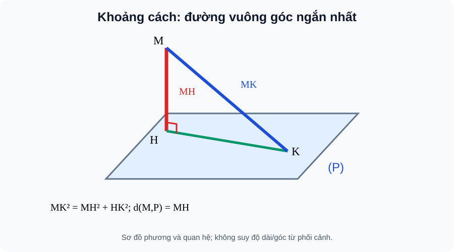
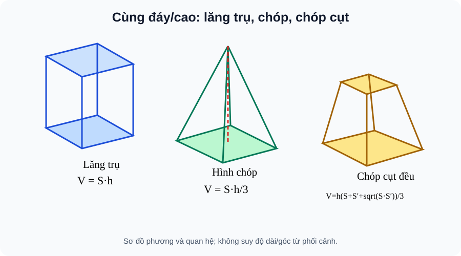

HỌC THEO CHUYÊN ĐỀ · CĐ17 · TOÁN THPT
Khám phá thêm: Mô hình trực quan Chuyên đề 17 (tùy chọn).
Kiến thức
Đoạn ngắn nhất giữa các đối tượng hình học đi theo đường vuông góc; muốn tính thể tích, hãy xác định đáy và chiều cao vuông góc trước khi thay số.
1. Khoảng cách: vì sao không đo theo đường xiên?

Đọc hình B26 — vì sao đoạn vuông góc ngắn nhất?
Trong hình, hãy chỉ rõ M ở ngoài (P), H là chân MH⊥(P) và K là điểm khác ở mặt phẳng. Đọc đẳng thức MK²=MH²+HK² để thấy MK dài hơn MH nếu K≠H. Hình này minh họa khoảng cách điểm–mặt, không phải một hình dựng hai đường chéo nhau. Với hai đường chéo nhau ở mục 1.5, tự vẽ hình mới và kiểm tra hai đầu của đoạn vuông góc chung đều thuộc hai đường, đồng thời đoạn ấy vuông góc với cả hai phương.
1.1. Khoảng cách từ điểm đến đường thẳng
Ý nghĩa trước công thức. Hãy tưởng tượng tìm con đường ngắn nhất từ một điểm A đến một thanh thẳng d. Nếu chọn một điểm X bất kì trên d thì AX là một đường xiên. Chỉ khi hạ AH vuông góc d mới có tam giác AHX vuông ở H, từ đó \(AX^2=AH^2+HX^2\). Vì \(HX^2\ge0\), đoạn thẳng ngắn nhất là AH và chỉ bằng AX khi X=H. Đây là lí do định nghĩa khoảng cách gắn với phép chiếu vuông góc, không phải một quy ước tùy ý.
ĐỊNH NGHĨA
Khoảng cách từ điểm A đến đường d là độ dài AH với H là chân vuông góc trên d; mọi đoạn AX đến X∈d đều dài không nhỏ hơn AH.
Ví dụ
Đề bài: Cho điểm A nằm ngoài đường thẳng d và H là chân đường vuông góc kẻ từ A đến d. Biết AH=3 cm, X∈d với HX=4 cm. Hãy tính AX và khoảng cách từ A đến d, giải thích tại sao hai độ dài khác nhau.
Lời giải: Vì H,X∈d nên tam giác AHX vuông ở H, AX=√(3²+4²)=5 cm. Với mọi X∈d, AX²=AH²+HX²≥AH², dấu bằng khi X=H; vì vậy d(A,d)=AH=3 cm, không lấy đường xiên AX làm khoảng cách.
Vận dụng
H∈d, AH⊥d, AH=3 cm. d(A,d) bằng bao nhiêu?
Đối chiếu
3 cm. Đoạn xiên AX không ngắn hơn AH. **Kiểm lỗi** Nếu lấy đoạn xiên AX làm khoảng cách từ A đến d, trở lại **Kiến thức 1.1**: AH⊥d mới ngắn nhất, với X khác H thì AX²=AH²+HX². Tự thử **Bài luyện 1** và **Bài luyện 12**, tìm chân H trước khi tính.1.2. Khoảng cách từ điểm đến mặt phẳng
Từ thanh thẳng đến cả mặt sàn. Với một chiếc đèn treo trên sàn, người ta muốn biết nó cao bao nhiêu. Dây xiên nối bóng đèn tới một góc phòng thường dài hơn độ cao; chân vuông góc xuống sàn mới cho độ dài ngắn nhất. Hình dung một mặt phẳng như chứa rất nhiều đường qua chân H; với mọi X khác H trên mặt sàn, tam giác AHX vuông H. Nếu A đã ở trên sàn thì khoảng cách bằng 0.
ĐỊNH NGHĨA
Khoảng cách từ A đến (P) là độ dài AH của đường vuông góc mặt (P) tại H, và bằng 0 nếu A thuộc (P).
Ví dụ
Đề bài: Cho điểm A(2,−1,4) và (P):z=0. Tìm chân vuông góc H, rồi chứng minh khoảng cách ngắn nhất.
Lời giải: H=(2,−1,0) vì AH theo phương (0,0,1) vuông góc (P). Với mọi X(x,y,0) trên mặt, AX²=(x−2)²+(y+1)²+16≥16, dấu bằng khi X=H. Do đó d(A,(P))=4, nhỏ hơn mọi đoạn xiên khác.
Vận dụng
A∈(P). d(A,(P)) bằng bao nhiêu?
Đối chiếu
0, không cần dựng đoạn khác. **Kiểm lỗi** Nếu điểm A đã thuộc (P) mà em vẫn cho khoảng cách dương, đọc **Kiến thức 1.2**: chân vuông góc trùng chính A, khoảng cách bằng 0. Thử **Bài luyện 2** và **Bài luyện 13**, phân biệt đoạn vuông góc với đoạn xiên.1.3. Khoảng cách đường thẳng song song mặt phẳng
Một đường ở cùng độ cao. Thanh xà ngang song song sàn: khi ta đi dọc thanh, độ cao không đổi. Không phải vì mọi đoạn nối đến sàn bằng nhau; chỉ các đoạn vuông góc mới bằng nhau. Điều kiện d∥(P) rất quan trọng: nếu d nghiêng và cắt sàn, điểm ở gần chân giao có thể có độ cao khác. Kiểm tra điều kiện trước rồi mới lấy một điểm bất kì trên d.
PHƯƠNG PHÁP
Với d∥(P), mọi điểm A của d có cùng khoảng cách đến (P), vì hình chiếu của hai điểm trên d nằm trên một đường song song với d trong (P).
Hai đường thẳng song song cũng có khoảng cách không đổi. Giữ nguyên đường \(b\), di chuyển một điểm \(A\) dọc theo đường song song \(a\): các đoạn vuông góc từ \(A\) xuống \(b\) có cùng độ dài. Vì thế ta không cần tìm mọi cặp điểm trên hai đường; chỉ cần chọn một điểm thuận tiện ở \(a\) và hạ vuông góc xuống \(b\).
ĐỊNH NGHĨA — Khoảng cách giữa hai đường thẳng song song. Với \(a\parallel b\), khoảng cách \(d(a,b)\) bằng \(d(A,b)\) với bất cứ điểm \(A\in a\). Chân vuông góc từ \(A\) xuống \(b\) cho đoạn ngắn nhất nối hai đường. Nếu hai đường trùng nhau thì khoảng cách bằng \(0\).
Chẳng hạn, trong mặt phẳng Oxy, \(a:y=0\) và \(b:y=3\) song song. Chọn \(A(2;0)\in a\), chân vuông góc \(H(2;3)\in b\) nên \(d(a,b)=AH=3\), không phải lấy một đoạn nối xiên bất kì.
Ví dụ
Đề bài: Cho d={(t,1,3):t∈ℝ} và (P):z=0. Chứng minh d∥(P) rồi tính khoảng cách.
Lời giải: Mọi điểm của d có z=3 nên không gặp (P), và phương (1,0,0) song song mặt z=0. Lấy A=(0,1,3)∈d, chân H=(0,1,0)∈(P), AH=3. Mọi điểm khác trên d vẫn có độ cao vuông góc 3 nên d(d,(P))=3.
Vận dụng
Đường d∥(P); hai điểm A,B thuộc d. Có d(A,(P))=d(B,(P)) không?
Đối chiếu
Có, vì khoảng cách đường song song mặt phẳng không đổi theo điểm. **Kiểm lỗi** Nếu dùng bất kì điểm trên d mà chưa chứng minh d∥(P), đọc **Kiến thức 1.3**: khi đường song song phân biệt mặt, độ cao từ mọi điểm trên đường không đổi. Thử **Bài luyện 3** và **Bài luyện 14**.1.4. Khoảng cách hai mặt phẳng song song
Hai tầng sàn song song. Muốn đo độ chênh cao giữa hai tầng, đừng đo cầu thang xiên. Dựng AH vuông góc hai mặt: vì hai mặt song song, độ dài của các đường vuông góc chung bằng nhau. Bài toán một cặp mặt được quy về khoảng cách từ một điểm A ở mặt trên đến mặt dưới. Nếu hai mặt cắt nhau, “khoảng cách giữa hai mặt song song” không còn là bài toán này.
PHƯƠNG PHÁP
Hai mặt phẳng song song có khoảng cách không đổi, đo theo một đoạn vuông góc chung, không phải đoạn nối xiên bất kì.
Ví dụ
Đề bài: Cho hai mặt (P):z=0 và (Q):z=5. Tính khoảng cách giữa hai mặt và chứng minh ngắn nhất.
Lời giải: Hai mặt phân biệt có cùng phương pháp tuyến (0,0,1), do đó song song. Với A=(1,2,5)∈Q, H=(1,2,0)∈P, AH=5. Với mọi B=(x,y,0)∈P, AB²=(x−1)²+(y−2)²+25≥25, nên đoạn AH vuông góc chung cho khoảng cách 5.
Vận dụng
Hai mặt song song cách nhau theo pháp tuyến 4 m. Khoảng cách hai mặt?
Đối chiếu
4 m, là độ dài đoạn vuông góc chung. **Kiểm lỗi** Nếu dùng đoạn xiên nối hai điểm bất kì làm khoảng cách hai mặt, đọc **Kiến thức 1.4**: phải có hai mặt song song và đo bằng đoạn vuông góc chung. Thử **Bài luyện 4** và **Bài luyện 15**, tìm chân vuông góc.1.5. Khoảng cách giữa hai đường chéo nhau
Khi hai đường chéo nhau, khoảng cách đo ở đâu? Một cặp đường thẳng trong không gian không song song nhưng không giao nhau: không thể đo khoảng cách bằng cách chọn đại hai đầu mút rồi nối chúng. Phải tìm đoạn MN với M trên đường thứ nhất, N trên đường thứ hai, sao cho MN vuông góc cả hai. Trong lập phương, đoạn AD nối A∈AB và D∈DD′ vừa vuông góc AB vừa vuông góc DD′. Dùng phương pháp hình học dựng hai chân, không cần hệ tọa độ Oxyz của lớp 12.
PHƯƠNG PHÁP
Với hai đường chéo nhau, khoảng cách là độ dài đoạn vuông góc chung có hai đầu mút trên từng đường, không phải khoảng cách của hai điểm tùy ý.
Có hai cách khác để tính cùng một khoảng cách khi dựng trực tiếp đoạn vuông góc chung khó. Ta có thể dựng một mặt phẳng \((Q)\) chứa \(b\) và song song với \(a\); khi ấy \(d(a,b)=d(a,(Q))\). Hoặc dựng hai mặt phẳng \((P)\parallel(Q)\) lần lượt chứa \(a\) và \(b\); khi ấy \(d(a,b)=d((P),(Q))\). Các mặt phẳng phải thỏa cả điều kiện chứa đường và song song; không lấy bất kỳ mặt nào gần hai đường rồi áp dụng.
Vì sao hai cách đó hợp lý? Hãy tưởng tượng tịnh tiến đường \(a\) theo phương vuông góc cho đến khi nằm trong mặt \((Q)\). Độ dời ngắn nhất chính là độ dài đoạn vuông góc chung. Trong Ví dụ dưới đây, có thể chọn \((P):z=0\) chứa \(a\) và \((Q):z=4\) chứa \(b\): hai mặt cách nhau \(4\) nên hai đường cũng cách nhau \(4\).
Vì sao đoạn vuông góc chung là ngắn nhất? Lấy hai đường chéo nhau \(a,b\). Một đoạn \(MN\) với \(M\in a,N\in b\) chỉ dùng để đo khoảng cách khi \(MN\perp a\) và \(MN\perp b\). Nếu nó chỉ vuông góc một trong hai đường, ta còn có thể dịch đầu kia dọc đường thứ hai và rút ngắn đoạn. Khi không dễ dựng trực tiếp \(MN\), chọn mặt phẳng \((Q)\) chứa \(b\) và song song \(a\); đường vuông góc từ \(a\) tới \((Q)\) cho đúng khoảng cách tối thiểu. Điều kiện \(a\parallel(Q)\), \(b\subset(Q)\) là bắt buộc.
TÍNH CHẤT — Hai đường chéo nhau. Nếu \(a,b\) chéo nhau thì tồn tại đoạn vuông góc chung duy nhất, và \(d(a,b)=MN=d(a,(Q))\), trong đó \(M\in a,N\in b\), \(MN\perp a,MN\perp b\), còn \((Q)\) chứa \(b\) và song song \(a\). Để dựng trực tiếp, phải kiểm đủ hai chân nằm đúng hai đường và đủ hai vuông góc.
Ví dụ minh họa. Trong Oxyz (dùng tọa độ chỉ để tự kiểm), xét \(a:\{(t,0,0):t\in\mathbb R\}\) và \(b:\{(0,s,3+s):s\in\mathbb R\}\). Hai đường chéo nhau vì hướng \((1,0,0)\) và \((0,1,1)\) không song song và không có điểm chung. Chọn \(M(0,0,0)\in a\), \(N(0,-3/2,3/2)\in b\), khi đó \(\overrightarrow{MN}=(0,-3/2,3/2)\) vuông góc cả hai vectơ chỉ phương (tích vô hướng lần lượt là \(0\) và \(-3/2+3/2=0\)). Do đó \(d(a,b)=MN=\frac{3}{\sqrt2}\), không phải \(3\) chỉ vì ở \(s=0\) điểm trên đường \(b\) cao \(3\). Không bắt buộc dùng công thức tọa độ khi giải hình không gian lớp 11; ví dụ cho thấy phải chọn đúng đoạn ngắn nhất.
Ví dụ
Đề bài: Hai đường a={(t,0,0)}, b={(0,s,4)}, t,s thực. Chứng minh chéo nhau và tìm khoảng cách.
Lời giải: Phương a=(1,0,0), b=(0,1,0) không song song, trong khi z trên a luôn 0, trên b luôn 4, nên không cắt; vậy chúng chéo nhau. A=(0,0,0)∈a, B=(0,0,4)∈b; AB theo Oz vuông góc cả Ox,Oy, là đoạn vuông góc chung dài 4. Hai đầu phải nằm trên từng đường.
Vận dụng
Trong lập phương cạnh 5, khoảng cách giữa AB và DD′ là bao nhiêu?
Đối chiếu
5, bằng AD là đoạn vuông góc chung; AB và DD′ chéo nhau. **Kiểm lỗi** Nếu chỉ kiểm đoạn nối vuông góc một đường, đọc **Kiến thức 1.5**: hai chân phải nằm trên hai đường chéo nhau và đoạn nối vuông góc **cả hai phương**. Thử **Bài luyện 11** và **Bài luyện 16**, chỉ rõ hai đầu mút.1.6. Đường cao vuông góc của khối
Chiều cao không phải cạnh nghiêng. Trong một khối chóp, cạnh bên đi từ đỉnh đến một đỉnh đáy thường xiên, còn chiều cao là khoảng cách ngắn nhất từ đỉnh tới mặt đáy. Ngay cả đường cao của mặt bên cũng nằm trong một tam giác khác và thường dài hơn chiều cao của khối. Với chóp đều đáy vuông cạnh 6, đường cao mặt bên 5, ta tìm đoạn từ tâm đáy đến trung điểm cạnh dài 3, rồi dùng Pitago suy chiều cao khối 4. Đây là bước bắt buộc trước khi dùng công thức thể tích.
ĐỊNH NGHĨA
Với khối chóp, chiều cao là khoảng cách vuông góc từ đỉnh tới mặt phẳng chứa đáy. Với khối lăng trụ hoặc khối chóp cụt có hai đáy song song, chiều cao là khoảng cách giữa hai mặt phẳng đáy. Không lấy cạnh bên nghiêng hoặc đường cao mặt bên làm chiều cao của khối.
Đường cao phụ thuộc loại khối. Với hình chóp \(S.ABCD\), chân \(H\) của \(SH\perp(ABCD)\) có thể nằm trong đáy, trên cạnh hoặc ngoài đa giác đáy; chiều cao vẫn là \(h=SH=d(S,(ABCD))\), không phụ thuộc vị trí chân chiếu. Với lăng trụ \(ABC.A'B'C'\), \(h\) là khoảng cách giữa hai mặt phẳng đáy song song, không phải mặc nhiên cạnh bên; chỉ ở lăng trụ đứng mới \(h=AA'=BB'=CC'\). Với chóp cụt có hai đáy song song, \(h\) là khoảng cách giữa chính hai mặt phẳng chứa đáy.
CHÚ Ý — Không có một “chiều cao của khối đa diện” cho mọi cách đặt khối. Phải xác định rõ đối tượng, chọn mặt đáy phù hợp và đo theo đường vuông góc. Hình chóp xiên vẫn có thể tích \(\frac13S_{\text{đáy}}h\) nếu chọn đúng \(h\).
Ví dụ minh họa. Chóp \(S.ABC\) có đáy nằm trong \(z=0\), đỉnh \(S(5,1,4)\); dù chân \(H(5,1,0)\) có thể ở ngoài tam giác \(ABC\), khoảng cách từ \(S\) đến mặt đáy vẫn là \(4\). Nếu diện tích đáy bằng \(18\) đơn vị vuông thì thể tích là \(\frac13\cdot18\cdot4=24\) đơn vị khối. Không dùng đoạn xiên \(SA\) làm chiều cao chỉ vì nó nối đỉnh với đáy.
Ví dụ
Đề bài: Chóp tứ giác đều đáy vuông cạnh 6 cm, đường cao mặt bên 5 cm. Tính chiều cao khối.
Lời giải: Gọi O là tâm đáy, M trung điểm cạnh. Vì chóp đều, SO⊥đáy và OM=3 cm; tam giác SOM vuông tại O. SO=√(SM²−OM²)=√(25−9)=4 cm. Chỉ SO là chiều cao khối, SM=5 cm là đường cao mặt bên.
Vận dụng
Chóp có chiều cao 4 và cạnh bên 5. Giá trị h trong V=(1/3)Sđáy h?
Đối chiếu
4, vì chiều cao là đoạn vuông góc. **Kiểm lỗi** Nếu nhầm cạnh bên hoặc đường cao mặt bên với chiều cao chóp, đọc **Kiến thức 1.6**: h là khoảng cách vuông góc từ đỉnh đến mặt đáy. Thử **Bài luyện 6** và **Bài luyện 17**, dựng tâm đáy và tam giác vuông.2. Thể tích: từ lớp cắt bằng nhau đến khối thu nhỏ

Đọc hình B27 — so sánh công thức qua cùng chiều cao.
Hãy tìm cùng một diện tích đáy S và chiều cao vuông góc h trước khi so sánh: lăng trụ giữ nguyên diện tích lát cắt nên V=Sh; chóp có lát cắt nhỏ dần nên V=Sh/3; chóp cụt có hai đáy song song với diện tích S và S′ và cần thêm căn \(\sqrt{SS'}\). Nét vẽ phối cảnh không chứng minh tỉ lệ 1/3; câu chuyện về các lát cắt giải thích vì sao công thức khác nhau.
2.1. Thể tích lăng trụ
Vì sao lăng trụ nhân diện tích đáy với chiều cao? Hãy tưởng tượng chồng nhiều tờ bìa có cùng hình và diện tích S lên nhau. Mỗi lớp dày thêm một chút làm thể tích tăng tương ứng; tổng chiều dày h cho V=Sh. Nếu chồng các tờ bìa lệch nhau để tạo lăng trụ xiên, diện tích mỗi lát cắt song song đáy vẫn S và chiều cao vuông góc vẫn h: thể tích không thay đổi chỉ vì cạnh bên nghiêng. Vì vậy, h không thể thay bằng độ dài cạnh bên nếu không biết nó vuông góc đáy.
CÔNG THỨC — Thể tích lăng trụ
Thể tích lăng trụ bằng diện tích đáy nhân chiều cao vuông góc V=Sđáy·h. Hộp có các lát cắt bằng nhau theo chiều cao nên thể tích tỉ lệ tuyến tính với h.
Từ định nghĩa hình lăng trụ đến đơn vị thể tích. Khi cắt lăng trụ bởi các mặt phẳng song song đáy, thiết diện của mỗi lát có đúng diện tích đáy \(S\), kể cả lăng trụ xiên. Độ cao \(h\) là độ dời vuông góc giữa hai đáy, không phải độ dài cạnh nối hai đỉnh. Vì vậy, hình trụ lăng trụ trong phạm vi bài này dùng \(V=Sh\); \(S\) có đơn vị diện tích và \(h\) có đơn vị độ dài.
Ví dụ minh họa. Hai lăng trụ có cùng đáy diện tích \(12\text{ cm}^2\), cùng khoảng cách giữa hai mặt phẳng đáy \(5\text{ cm}\), nhưng một lăng trụ đứng và một lăng trụ xiên có cạnh bên \(13\text{ cm}\). Cả hai có thể tích \(60\text{ cm}^3\). Nếu lấy \(12\cdot13\) cho lăng trụ xiên, ta đã đo chiều cao theo đường xiên và làm sai công thức. Diện tích thiết diện song song đáy giải thích vì sao độ nghiêng không tự làm tăng thể tích.
Ví dụ
Đề bài: Lăng trụ xiên có diện tích đáy 18 cm², chiều cao vuông góc 7 cm và cạnh bên 10 cm. Tính thể tích.
Lời giải: Lăng trụ xiên vẫn có tiết diện song song đáy bằng nhau, nên V=Sh với h vuông góc hai đáy. Ta được V=18×7=126 cm³; cạnh bên 10 cm nghiêng và không được thay vào h.
Vận dụng
Lăng trụ Sđáy=12 cm², h=5 cm; thể tích?
Đối chiếu
60 cm³, vì V=Sđáyh. **Kiểm lỗi** Nếu lấy cạnh bên của lăng trụ xiên làm h, đọc **Kiến thức 2.1**: V=Sđáy·h với h là khoảng cách vuông góc giữa hai đáy. Thử **Bài luyện 19** và **Bài luyện 29**, kiểm đơn vị khối.2.2. Thể tích khối chóp
Vì sao khối chóp có hệ số 1/3? Khác lăng trụ, các lát cắt song song đáy của chóp càng lên gần đỉnh càng nhỏ. Có thể tưởng tượng chia một lăng trụ thành ba khối chóp bằng thể tích (trong trường hợp ghép thích hợp), hoặc suy bằng nguyên lí thể tích từ những thiết diện tương ứng. Kết luận cho khối chóp là \(V=\frac13Sh\). Nếu thay bằng Sh, ta đã tính như lăng trụ và kết quả gấp ba thể tích thực. Không cần học tích phân mới hiểu được sự khác biệt về các lát cắt.
CÔNG THỨC — Thể tích khối chóp
Chóp cùng đáy và chiều cao với lăng trụ tương ứng chỉ có thể tích bằng một phần ba lăng trụ: V=(1/3)Sđáy·h. Hệ số 1/3 không xuất hiện với lăng trụ.
Ví dụ
Đề bài: Khối chóp có diện tích đáy 18 cm² và chiều cao vuông góc 7 cm. Tính thể tích, so với lăng trụ cùng đáy/cao.
Lời giải: Lăng trụ có V=18×7=126 cm³. Khối chóp có lát cắt thu nhỏ tới đỉnh, áp dụng hệ số 1/3: V=(1/3)×18×7=42 cm³, bằng đúng một phần ba lăng trụ. Không dùng Sh cho chóp.
Vận dụng
Chóp Sđáy=12 cm², h=5 cm; thể tích?
Đối chiếu
20 cm³; phải có hệ số 1/3. **Kiểm lỗi** Nếu tính thể tích chóp bằng công thức lăng trụ, đọc **Kiến thức 2.2**: chóp có cùng đáy và chiều cao chỉ bằng **một phần ba** thể tích lăng trụ. Thử **Bài luyện 20** và **Bài luyện 30**, ghi rõ 1/3.2.3. Thể tích hình hộp và lập phương
Hình hộp chỉ là một lăng trụ dễ nhìn. Ba kích thước a,b,c của hộp chữ nhật lần lượt tạo diện tích đáy ab và chiều cao c; do đó V=abc. Khi cả ba cạnh bằng nhau, V=a³. Lúc tính một bể chứa, luôn thống nhất đơn vị độ dài; nhân m² với m mới thu được m³, không phải m².
CÔNG THỨC — Thể tích hình hộp và lập phương
Hộp chữ nhật là lăng trụ đứng có đáy chữ nhật, nên V=abc; lập phương cạnh a có V=a³. Đơn vị diện tích đáy nhân độ dài thành đơn vị khối.
Ví dụ
Đề bài: Hộp chữ nhật kích thước 2,3,4 cm và lập phương cạnh 3 cm. Tính thể tích từng khối.
Lời giải: Hộp chọn đáy 2×3=6 cm², cao 4 cm nên V=6×4=24 cm³. Lập phương có Sđáy=9 cm², cao 3 cm nên V=3³=27 cm³. Kết quả phải là đơn vị khối cm³.
Vận dụng
Hộp có kích thước 2,3,4 cm, thể tích?
Đối chiếu
24 cm³. **Kiểm lỗi** Nếu lẫn diện tích bề mặt với thể tích hình hộp, đọc **Kiến thức 2.3**: thể tích bằng tích ba kích thước vuông góc. Thử **Bài luyện 21** và **Bài luyện 31**, ghi cm³ hoặc m³.2.4. Thể tích chóp cụt
Chóp cụt: vì sao có căn \(\sqrt{SS'}\)? Ở đây “chóp cụt” là phần còn lại khi cắt một hình chóp bằng mặt phẳng song song đáy; hai đáy vì thế đồng dạng. Không áp dụng công thức này cho một khối bất kỳ chỉ vì nó có hai mặt song song. Chóp cụt đều được tạo khi cắt một chóp bởi mặt phẳng song song đáy; hai đáy đồng dạng chứ không bằng nhau. Nếu tỉ số độ dài là k, tỉ số diện tích là k², nên một đại lượng kích thước “trung gian” tự nhiên phải gắn với \(\sqrt{SS'}\). Công thức \(V=\frac h3(S+\sqrt{SS'}+S')\) có thể tự kiểm bằng hai giới hạn: S′ tiến về S cho V→Sh (lăng trụ); S′ tiến về 0 cho V→Sh/3 (chóp). Đó là kiểm tra hợp lí, không thay cho giả thiết hai đáy đồng dạng/song song của chóp cụt.
CÔNG THỨC — Thể tích chóp cụt
Với chóp cụt có hai đáy song song diện tích S,S′ và chiều cao h, V=(h/3)(S+S′+√(SS′)). Công thức có cả h và trung bình nhân diện tích, không phải S·h đơn giản.
Tự suy công thức bằng hai hình chóp đồng dạng. Xét chóp cụt có đáy lớn diện tích \(S>0\), đáy nhỏ diện tích \(S'>0\), chiều cao vuông góc \(h>0\), và giả thiết mặt cắt song song đáy nên hai đáy đồng dạng. Gọi \(H\) là chiều cao chóp lớn trước khi cắt, \(H'\) là chiều cao chóp nhỏ bị cắt. Nếu tỉ số chiều dài hai đáy là \(k=\sqrt{S'/S}\) với \(0<k<1\), thì \(H'=kH\) và \(h=H-H'=(1-k)H\).
Thể tích phần còn lại bằng thể tích chóp lớn trừ chóp nhỏ, chứ không phải lấy trung bình cộng diện tích hai đáy rồi nhân chiều cao: [ V=\frac{SH}{3}-\frac{S'H'}{3} =\frac{SH}{3}(1-k^3) =\frac{Sh}{3}\frac{1-k^3}{1-k} =\frac{Sh}{3}(1+k+k^2) =\frac h3\bigl(S+\sqrt{SS'}+S'\bigr). ] Ở bước cuối, dùng \(Sk=\sqrt{SS'}\), \(Sk^2=S'\). Giới hạn áp dụng: đây là khối chóp cụt tạo bằng một mặt phẳng song song đáy, không phải mọi khối có hai mặt đáy song song. Nếu hai diện tích bằng nhau thì công thức cho \(Sh\) của lăng trụ như trường hợp giới hạn; nếu một đáy co về 0 thì cho \(\frac13Sh\) của khối chóp.
Ví dụ minh họa. Chóp cụt đều có hai đáy vuông cạnh \(8\) cm và \(4\) cm, chiều cao \(6\) cm. Tỉ số chiều dài \(k=1/2\), diện tích \(S=64\), \(S'=16\) cm², \(\sqrt{SS'}=32\) cm². Suy \(V=\frac63(64+32+16)=224\text{ cm}^3\). Kiểm ngược bằng phép trừ chóp: chóp lớn cao \(H=6/(1-1/2)=12\), chóp nhỏ cao \(6\); hiệu \(\frac13(64\cdot12-16\cdot6)=224\) cm³. Hai cách phải bằng nhau nếu đặt đúng \(k\).
Ví dụ
Đề bài: Chóp cụt đều hai đáy vuông cạnh 6 cm,3 cm, chiều cao vuông góc 4 cm. Tính thể tích.
Lời giải: Do cắt chóp đều song song đáy, hai đáy đồng dạng: S=36,S′=9 cm², √(SS′)=18 cm². V=h(S+S′+√(SS′))/3=(4/3)(36+9+18)=84 cm³. Không được dùng Sh của lăng trụ vì diện tích hai đáy khác nhau.
Vận dụng
Chóp cụt S=16,S′=4,h=6. Giá trị √(SS′)?
Đối chiếu
8, vì √(16×4)=8. **Kiểm lỗi** Nếu thiếu √(SS′), nhầm diện tích đáy với tỉ số cạnh hoặc dùng cạnh xiên làm h, đọc **Kiến thức 2.4**: chóp cụt là mặt cắt song song tạo hai đáy đồng dạng, V=h(S+S′+√SS′)/3. Thử **Bài luyện 22** và **Bài luyện 32**, kiểm giới hạn chóp/lăng trụ.Để tự quan sát thể tích chóp cụt thay đổi thế nào, em giữ cạnh đáy lớn \(a=6\) cm và chiều cao vuông góc \(h=4\) cm. Cạnh đáy nhỏ bằng \(6k\) với \(0\le k\le1\), do đó \(S=36\), \(S'=36k^2\) và \(\sqrt{SS'}=36k\) (cm²). Công thức thể tích cho \(V=\frac43(36+36k+36k^2)=48(1+k+k^2)\) cm³.
Vận dụng Em hãy tự tính \(V\) khi \(k=0\), \(k=\frac12\) và \(k=1\). Kết quả thay đổi theo chiều nào khi \(k\) tăng? Thử làm trước rồi tự mở Đối chiếu.
Đối chiếu
Khi \(k=0\), \(V=48\) cm³ (giới hạn hình chóp); khi \(k=\frac12\), \(V=84\) cm³ (chóp cụt); khi \(k=1\), \(V=144\) cm³ (giới hạn lăng trụ). Kết quả tăng khi cạnh đáy nhỏ tăng trong điều kiện đáy lớn và chiều cao cố định. **Nếu làm sai:** Kiểm lại diện tích đáy nhỏ \(36k^2\) và căn tích hai diện tích \(36k\); đừng lấy \(S'=36k\).2.5. Thể tích trong tình huống thực tế
Bài toán thực tế bắt đầu từ phân loại khối. Một thùng hàng hình hộp, một mái chóp hay một phễu chóp cụt không cùng công thức. Hãy làm theo thứ tự: nhận dạng hình, xác định đáy, vẽ chiều cao vuông góc, đổi đơn vị, rồi thay số. Một đáp án “60 m²” cho thể tích là dấu hiệu sai ngay cả khi phép nhân đúng; và lấy cạnh xiên làm h có thể khiến đáp án quá lớn.
PHƯƠNG PHÁP — Cách lập mô hình thể tích
Trong bài toán ứng dụng, phải phân loại khối, đổi đơn vị, xác định chiều cao vuông góc, rồi mới thay số; kết quả thể tích không thể là mét vuông.
Ví dụ
Đề bài: Lăng trụ đứng có đáy là tam giác vuông với hai cạnh góc vuông dài 6 cm và 8 cm; chiều cao lăng trụ là 7 cm. Tính thể tích và đổi sang lít.
Lời giải: Sđáy=(1/2)×6×8=24 cm²; lăng trụ đứng nên cạnh bên 7 cm là chiều cao vuông góc. V=24×7=168 cm³=0,168 lít vì 1000 cm³=1 lít. Kiểm tra cả công thức và đơn vị.
Vận dụng
Khối lăng trụ có diện tích đáy 6 m², cao 10 m. Thể tích?
Đối chiếu
60 m³, không phải 60 m². **Kiểm lỗi** Nếu quên hệ số 1/2 cho đáy tam giác vuông hoặc đổi cm³ sang lít sai, đọc **Kiến thức 2.5**: tính diện tích đáy trước, nhân chiều cao vuông góc rồi mới đổi đơn vị. Thử **Bài luyện 23** và **Bài luyện 33**.2.6. Tổng hợp hình học và thể tích
Đi từ đáp số ngược về hình. Với chóp đều đáy vuông cạnh 8 và đường cao mặt bên 5, nếu vội lấy h=5 thì thể tích sai. Hãy tìm trung điểm M của cạnh đáy và tâm O; OM=4, SM=5 nên chiều cao SO=3, rồi mới tính \(V=\frac13\cdot64\cdot3=64\). Tư duy kiểm tra theo chuỗi “hình → đoạn vuông góc → chiều cao → thể tích → đơn vị” giúp phát hiện sai ngay từ bước chọn dữ kiện.
PHƯƠNG PHÁP — Các bước tổng hợp hình học và thể tích
Bài tổng hợp đi ngược từ thể tích: cần xác định đáy và chiều cao, muốn tìm chiều cao phải dựng hình chiếu vuông góc, muốn chứng minh vuông góc mặt cần hai đường cắt nhau trong mặt. Mỗi mũi suy luận có điều kiện riêng.
Khối đồng dạng: vì sao thể tích đổi theo lũy thừa ba? Nếu mọi độ dài tương ứng của hai khối đồng dạng biến đổi theo hệ số \(k>0\), diện tích đáy biến đổi \(k^2\), chiều cao vuông góc biến đổi \(k\). Do đó thể tích khối lăng trụ hoặc hình chóp cùng kiểu biến đổi \(k^3\). Không nhầm với quy tắc \(k^2\) dành cho diện tích thiết diện. Đây là công cụ kiểm đáp số trong bài về khối thu nhỏ, phóng lớn; nó không cho phép dùng \(k^3\) khi hai khối không đồng dạng.
Ví dụ minh họa. Hai chóp tứ giác đều đồng dạng có tỉ số cạnh tương ứng \(2/3\), chóp lớn thể tích \(81\text{ cm}^3\). Chóp nhỏ có thể tích \(81\cdot(2/3)^3=24\text{ cm}^3\). Nếu tính \(81\cdot(2/3)^2=36\text{ cm}^3\) là mới đổi diện tích, còn thiếu tỉ số chiều cao \(2/3\). Luôn viết “độ dài \(k\) → diện tích \(k^2\) → thể tích \(k^3\)” và kiểm khối thật sự đồng dạng.
Ví dụ
Đề bài: Chóp tứ giác đều đáy vuông cạnh 8 cm, đường cao mặt bên 5 cm. Tính thể tích mà không biết sẵn chiều cao khối.
Lời giải: Gọi O là tâm đáy, M trung điểm cạnh; OM=4 cm. Vì SO⊥đáy, tam giác SOM vuông O, SO=√(SM²−OM²)=√(25−16)=3 cm. Sđáy=8²=64 cm², nên V=(1/3)×64×3=64 cm³. Không thay SM=5 vào h.
Vận dụng
Chóp đều đáy vuông cạnh 6 và đường cao mặt bên 5. Chiều cao khối?
Đối chiếu
4, từ tam giác vuông nối đỉnh, tâm đáy, trung điểm cạnh: 5²−3²=4². **Kiểm lỗi** Nếu thế đường cao mặt bên vào h của công thức thể tích, đọc **Kiến thức 2.6**: dựng tâm đáy, trung điểm cạnh, dùng Pitago tìm chiều cao vuông góc. Thử **Bài luyện 7** và **Bài luyện 34**, kiểm hình và đơn vị.